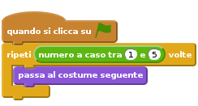
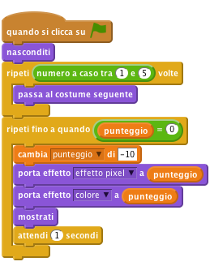
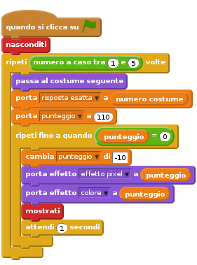
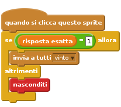
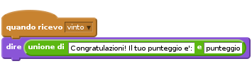
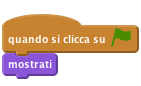

Introduzione
Un oggetto casuale e’ disegnato sulla lavagna in modo distorto. Devi indovinare che cos’e’ facendo click sull’immagine corretta sotto la lavagna. Piu’ veloce sarai piu’ punti otterrai!!

Passo 1: Disegna oggetti diveris sulla lavagna
Vogliamo disegnare delle immagini diverse tra loro sulla lavagna.
Lista delle Attivita’
- Crea un nuovo progetto Scratch. Rimuovi il gatto Felix con click-destro e seleziona cancella.
- Sostituisci lo sfondo con lo sfondo chalkboard presente nella categoria Interni della libreria di Scratch
- Crea un nuovo sprite usando la libreria di Scratch. Puoi usare il costume che vuoi. Guarda nella categoria Cose
- Posizione il nuovo sprite al centro della lavagna. Ingrandiscilo o rimpiccioliscilo se necessario.
- Fai click sul tab
Costumie importa altri quattro costumi. Scegli dalla categoria Cose in base a cio’ che preferisci tu. Adesso creiamo lo script che fa’ apparire un’immagine a caso

Verifica il progetto
Fai click sulla bandierina verde.
- Vedi lo sprite con un costume diverso?
Fai click sulla bandierina un po’ di volte
- Lo sprite cambia costume ogni volta? Alcune volte puoi vedere lo stesso costume due volte di fila, ma e’ ok. Dovresti vedere anche lo sprite lampeggiare mentre cambia costume. Riolveremo questo problema successivamente.
Salva il progetto
Passo 2: Distorciamo l’oggetto
Rendiamo un immagine difficile da riconoscere quando appare e con il passare del tempo rendiamola sempre piu’ riconoscibile.
Usiamo una variabile per il punteggio e per controllare il livello di distorsione. Se il punteggio e’ alto allora ci sara’ molta distorsione. Man mano che il punteggio scende anche l’immagine diventera’ piu’ chiara e riconoscibile.
Lista delle Attivita’
- Crea una variabile
punteggioper tutti gli sprite Cambia lo script in questo modo:

Aggiungi, dopo il blocco nasconditi, un blocco che imposta il punteggio a 110 (usa il blocco porta punteggio a)
Verifica il progetto
Fai click sulla bandierina verde.
- Vedi un immagine casuale e distorta sulla lavagna?
- Vedi la distorsione ridursi?
- Vedi il punteggio scendere e l’immagine meno distorta?
- Quando il punteggio raggiunge 0 vedi un’immagine senza distorsione?
- Ogni volta che premi la bandierina verde, ottieni sempre un’immagine diversa dalla precedenta?
Cose da provare
- Prova a cambiare il punteggio iniziale e di quanto viene decrementato ad ogni ciclo. Questo cambiamento cambia il modo in cui l’immagine viene disegnata? E’ piu’ difficile o facile riconoscere l’oggetto sulla lavagna?
- Prova ad usare qualche altro effetto grafico nel blocco
porta effetto. La difficolta’ del gioco cambia?
Salva il progetto
Passo 3: Fai indovinare l’oggetto al giocatore
A questo punto abbiamo un’immagine casuale disegnata sulla lavagna che lentamente diventa sempre piu’ nitida e un punteggio che diminuisce con il passare del tempo. Come si fa’ a vincere la partita? Aggiungeremo alcuni sprite sotto la lavagna ed il giocatore dovra’ fare click su quello giusto vincendo la partita. Se invece fara’ click sull’oggetto errato scomparira’ immediatamente.
Lista delle Attivita’
Prima di tutto dobbiamo sapere qual’e’ la risposta esatta.
- Crea una nuova variabile per tutti gli sprite chiamara
risposta esatta. Cambia lo script per memorizzare la risposta esatta. Aggiungi il blocco
porta [risposta esatta v] a (numero costume)dopo il primo loop:
Adesso aggiungiamo gli sprite sotto la lavagna:
- Duplica lo sprite principale e trascina la copia sotto la lavagna a sinistra
- Rinomina questo sprite in risposta1.
- Cancella lo script per lo sprite
risposta1. - Cancella tutti i costumi di
risposta1tranne il primo - Ripeti questi 4 passi per un nupovo sprite chiamato risposta2. Allinealo alla destra di
risposta1. Questa volta cancella tutti i costumi tranne il secondo. - Ripeti il tutto altre 3 volte per gli sprite risposta3, risposta4 e risposta5. Nessuno degli sprite
rispostadeve avere uno script
Alla fine dovresti avere 5 sprite in fila, uno accanto all’altro sotto la lavagna, che rappresentano i 5 costumi dello sprite principale.
Adesso vogliamo che ogni sprite risposta sia capace di reagire quando il giocatore gli fa click sopra e di fare qualcosa in base alla risposta (giusta o sbagliata)
Aggiungi questo script allo sprite
risposta1:
- Trascina e copia lo script per ogni altro sprite
risposta Adesso dobbiamo aggiungere un blocco che risponde al messaggio
vinto. Vai allo script dello sprite principale ed aggiungi questa logica allo script:
Verifica il progetto
Fai click sulla bandierina verde.
- Quando fai i test del tuo gioco puoi visualizzare la variabile risposta esatta sullo stage in modo da verificare quale e’ la risposta esatta.
- Cosa succede quando fai click sulla risposta esatta (sprite)?
- Cosa succede quando fai click sulla risposta errata (sprite)?
- Cosa succede alla risposta errata quando inizi una nuova partita?
Lista delle Attivita’
Il test del gioco evidenzia due problemi. Primo, le risposte errate non vengono visualizzate nella prossima partita. Secondo, il punteggio non si ferma quando indoviniamo la risposta esatta.
Per risolvere il primo problema, aggiungi questo script ai 5 sprite
risposta:
Per risolvere il secondo problema dobbiamo fermare il ciclo ripeti fino a quando quando il giocatore indovina la risposta esatta. Usiamo una nuova variabile chiamata vinto che inizializziamo a zero all’inizio del gioco e ad uno quando si vince il gioco. Il ciclo dovra’ fermarsi quando il punteggio raggiunge lo 0 oppure la variabile vinto assume valore 1.
- Crea ua nuova variabile chiamata
vinto Cambia lo script dello sprite principale in questo modo:
- Create a new variable called won?
Change the scripts so they look like this:
![quando si clicca su @
nasconditi
ripeti (numero a caso tra (1) e (5)) volte
passa al costume seguente
fine
porta [risposta esatta v] a (numero costume)
porta [punteggio v] a (110)
porta [vinto v] a (0)
ripeti fino a quando <<(punteggio) = (0)> o <(vinto) = (1)>>
cambia [punteggio v] di [-10]
porta effetto [effetto pixel v] a (punteggio)
porta effetto [colore v] a (punteggio)
mostrati
attendi (1) secondi
fine
quando ricevo [vinto v]
porta [vinto v] a [1]
rimuovi effetti grafici
dire (unione di [Congratulazioni! Il tuo punteggio e':] e [punteggio])](728b0856a431fe88eebd5a2696bf9888425ff03c.png)
Salva il progetto
Ben Fatto!! Hai finito il gioco base!
Ci sono altre cose che puoi fare cin il tuo gioco. Dai un’occhiata alle sfide!
Sfida 1: Rendi il gioco piu’ facile o difficile
Cambia la difficolta’ del gioco.
- Prova a cambiare la velocita’ con cui l’immagine diventa nitida e la velocita’ di decremento del punteggio
- Prova a cambiare il livello di distorsione dell’immagine
- Prova a cambiare le immagini che devono essere indovinate rendendoli piu’ simili tra loro o diverse tra loro. Se lo fai ricordati di cambiare i costumi delle risposte/
Salva il progetto
Sfida 2: Distorci l’immagine in modo diverso per ogni partita
Attualmente per ogni partita viene usato lo stesso livello di distorsione. Nel passo 2 hai provato diversi livelli di distorsione.
Cerca altri livelli di distorsione che sono adeguati al gioco.
Cambia lo script in modo che un livello diverso di distorsione sia usato nel ciclo ripeti fino a quando
Suggerimento: Prova a creare una nuova variabile chiamata distorsione. Assegnale un valore casuale all’inizio del gioco. Usa dei blocchi se dentro il ciclo ripeti fino a quando in modo da applicare il corretto livello di distorsione per la partita.
Salva il progetto
Sfida 3: Crea dei livelli per il gioco
Attualmente ogni partita e’ indipendente dalle altre. Modifica il gioco in modo che ci siano piu’ livelli nella stessa partita. Per esempio, fai 3 livelli in una stessa partita, cosi’ che il giocatore deve indovinare 3 immagini diverse e puo’ raggiungere un punteggio di 300 punti.
Suggerimento: Aggiungi un’altra variabile per tener traccia del punteggio totale per i diversi livelli. Hai anche bisogno di un ciclo per avere piu’ livelli.
Suggerimento: Devi anche fare in modo che le risposte errate riappaiano all’inizio di un nuovo livello. Potresti forse usare un messaggio invia a tutti?
Salva il progetto
Sfida 4: Crea livelli di difficolta’ crescente
Man mano che sali di livello rendi il gioco piu’ difficile.
Ogni livello deve per forza avere lo stesso punteggio? Dovresti forse assegnare piu’ punti per il livelli piu’ difficili?
Suggerimento: Come fai a sapere in che livello sei? Come puoi usare questa informazione per aumentare la difficolta’ ed il punteggio?
Salva il progetto
Sfida 5: Continua a giocare finche’ il giocatore da risposte errate
Anziche’ usare un numero fisso di livelli, lascia giocare il gioco finche’ la risposta esatta viene indovinata.
Salva il progetto
Sfida 6: Rendi il gioco piu’ facile o difficile in base all’abilita’ del giocatore
Anziche’ rendere il gioco sempre piu’ difficile, fai in modo che il gioco si adatti in base alle capacita’ del giocatore. Se l’immagine viene indovinata velocemnete, rendi il prossimo livello piu’ difficile. Se la risposta viene sbagliata o e’ troppo lenta rendi il prossimo livello piu’ semplice.
Questa idea funziona solamente se non sommi il punteggio di tutti i livelli.
Salva il progetto
Sfida 7: Memorizza il record del gioco
Tieni traccia del record di punteggio del gioco. Se viene superato chiedi il nome del giocatore e aggiorna la tabella dei record. Assicurati che il nome del giocatore ed il punteggio record vengano visualizzati.
Salva il progetto
Sfida 8: Penalizza le risposte sbagliate
A questo punto non c’e’ nessuno svantaggio nel dare risposte sbagliate. Cambia il gioco in modo che quano viene data una risposta sbagliata il punteggio viene diminuito.
Pensi che il gioco sia migliore cosi’?
Salva il progetto
Ben fatto!!! Hai finito con questo esercizio. Adesso divertiti con il tuo nuovo gioco!!!
Ehi, non dimenticare che puoi condividere il tuo gioco con tutti i tuoi amici e familiari. Basta che fai selezioni il menu File e poi Share to website!!